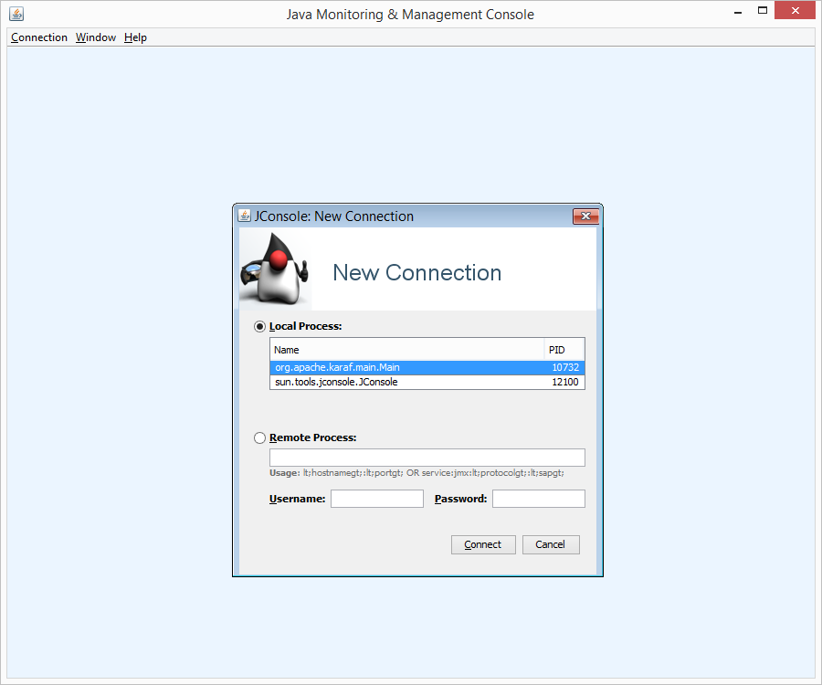
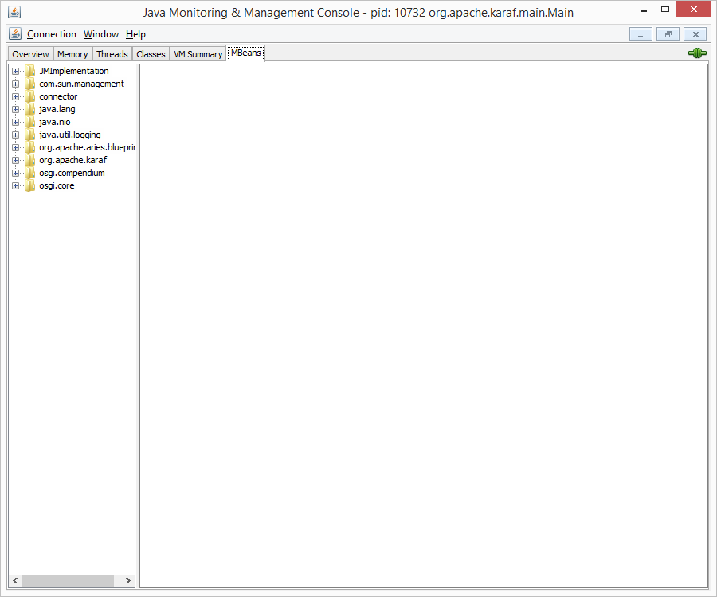
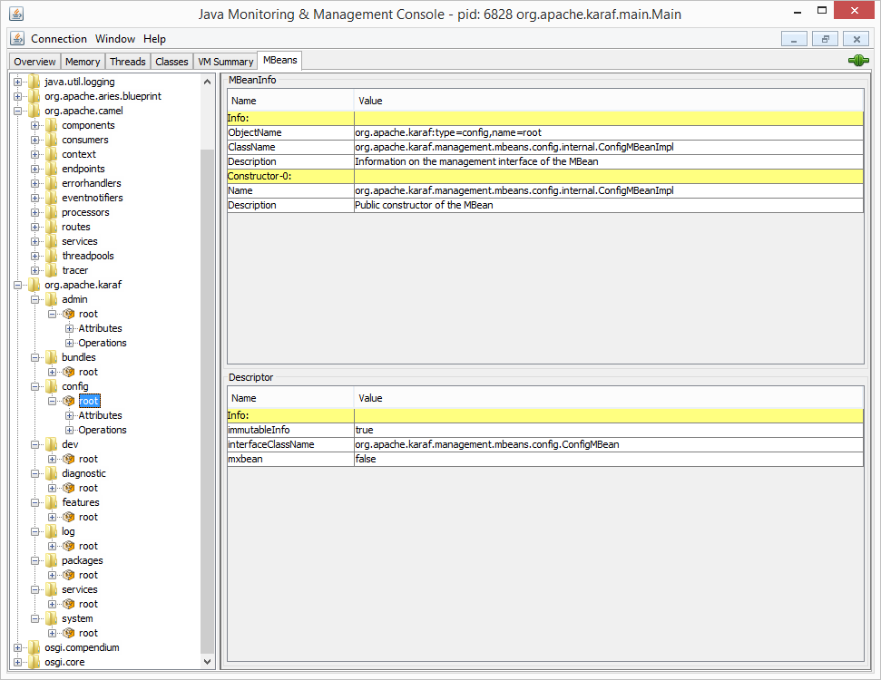
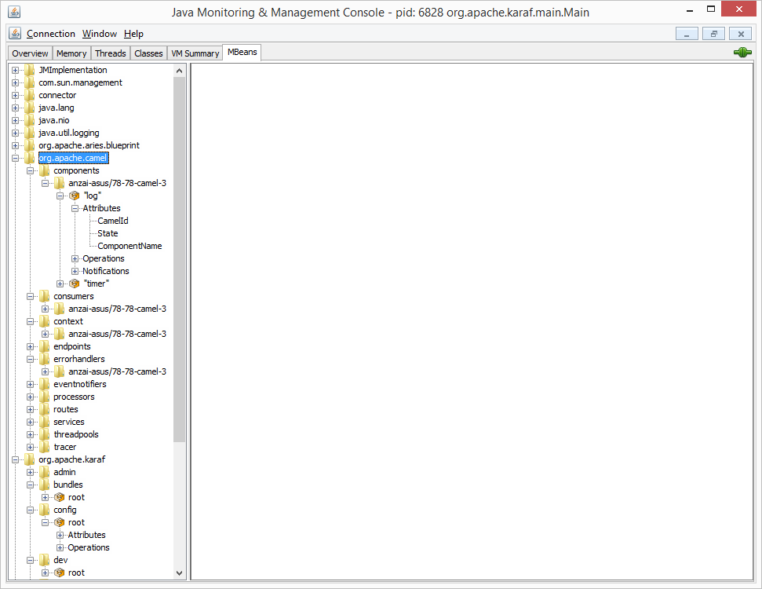

Exploring Apache Karaf MBeans using JConsole
Posted on May 10, 2014
This post will be about using JConsole to explore the MBeans exposed by Apache Karaf. Here’s a list of MBeans that Karaf provides.
Getting Karaf up and running
Karaf provides an extremely clear an concise quick start guide and I was able to up everything up and running by following the instructions.
Monitoring using JConsole
- Fire up Karaf using
$KARAF_INSTALL_LOCATION\bin\start - Fire up JConsole

JConsole can detect the Karaf process
Under the new connection window, JConsole should be able to detect the Karaf process. We can connect to it, and head straight to the MBeans tab. We can immediately see the list of MBeans available. The java.lang.Memory and java.lang.Threading MBeans are there, and we explored it in a previous blog post.

MBeans tab of the Karaf process
The Karaf MBeans
Karaf actually provides quite a number of MBeans, and are categorized by type. For example the mbeans have the domain org.apache.karaf, and some of the types are admin, bundles, config, etc. All of them have the same name, which is root.

Karaf provides MBeans of many kinds
Camel MBeans
While exploring MBeans using JConsole, and following the Karaf quickstart, I chanced upon MBeans with the domain org.apache.camel, so it seems like Camel provides quite a number of mbeans as well! What’s interesting to me is that I am able to see Camel MBeans when my connection is to Karaf. I think this is because Camel was started by Karaf, so they are attached to the same process.

Camel provides MBeans as well